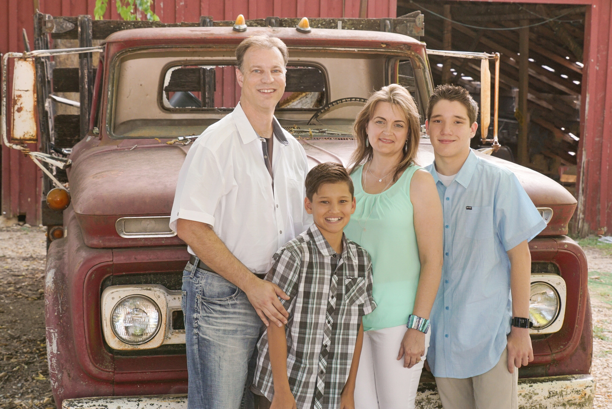
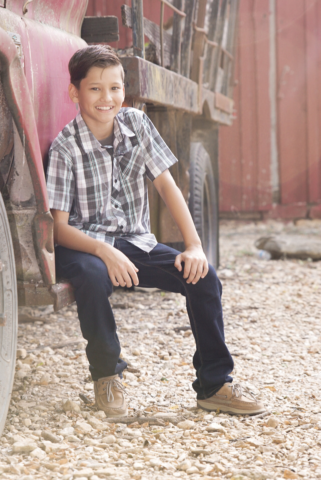
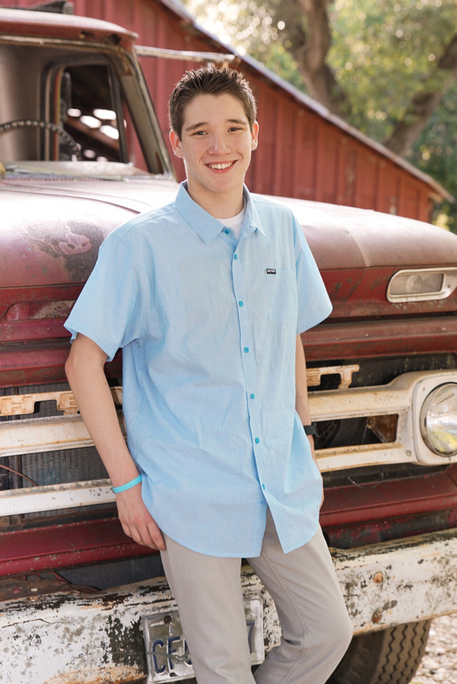
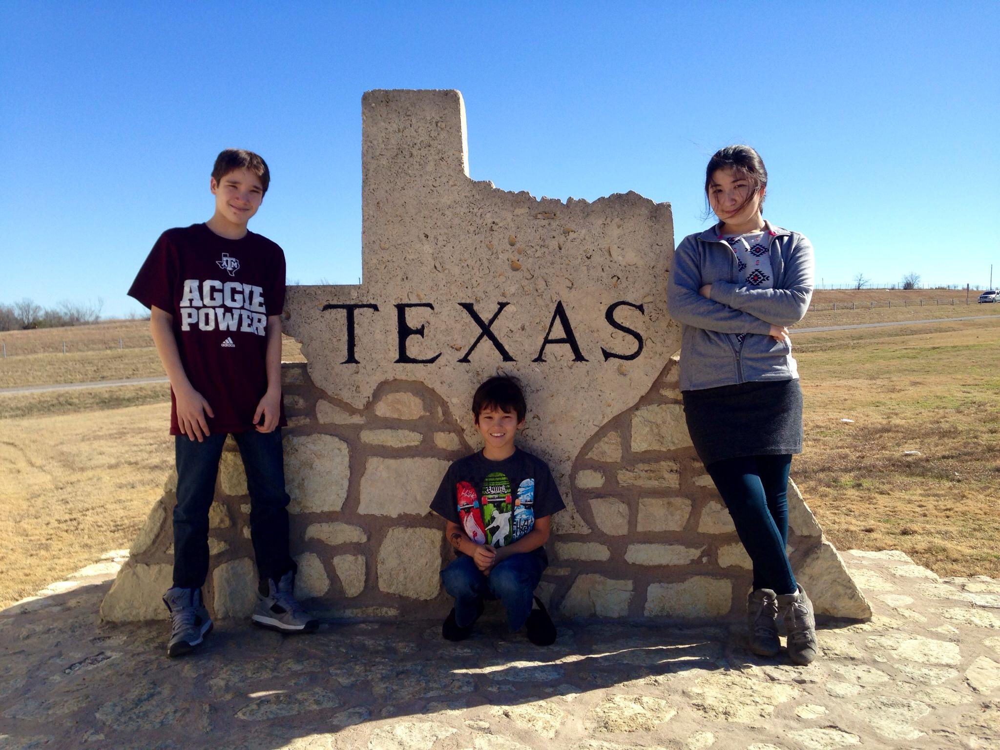

About our Family
Carey and I are the proud parents of two wonderful boys, Ayden and Brennan, that
we adopted from Kazakhstan. Ayden was adopted from Almaty, Kazakhstan in April
2003 at the age of 13 months. Two years later, we adopted Brennan from Karaganda,
Kazakhstan in April 2005 at the age of 9 months. In 2014, we had the opportunity
to house an amazing exchange student from Almaty, Kazakhstan. Amina lived with
us for a year and attended high school as a Junior (based on her age) although
it was technically her last year of high school in her county. She is now attending
one of the top medical universities in Kazakhstan. We consider her our “adopted”
daughter and are very proud of her accomplishments.
Why International Adoption?
Many people ask us why we decided to do an international adoption from Kazakhstan.
Carey and I started out being foster and adoption certified with the state of
Texas. After a few months of waiting on the state, a friend recommended that
we pursue international adoption at the same time. There are both pros and cons
to each so I’m not saying one is better than the other. Adopting through the
state is inexpensive, and provides perks such as free services for the children,
and college tuition for in-state colleges when they’re older. Yet, many of the
children can have physical and emotional problems since many are removed from
their homes due to alcohol, drugs, and abuse. Another reason Carey and I decided
on international adoption is that there is less risk in having the adoption fall
through due to a family member (grandparent, etc.) appearing at the last minute.
We had many friends who were fostering to adopt, and had the children either
removed at the last moment to a family member, or returned to their biological
parents due to court orders. Heartbreaking and Carey and I were not emotionally
ready for that. International adoptions are much more expensive, but in many
cases, have less risk associated with them. Many if not most of the children
available are up for adoption due to their economy. This means that many of the
children are, in general, healthier and have fewer problems than the children
available from the state.
Why Kazakhstan?
We first wanted to adopt from Romania because my father was born in Romania and we
thought it would be really great for cultural continuity. In October, 1990 the
TV news show 20/20 did an in-depth report on the poor conditions of the orphanages
there. Due to all of the bad press that Romanian orphanages had received over,
they had closed the adoptions to the US. The friend who recommended we look at
international adoption recommended we contact World Partner Adoption agency out
of Atlanta, GA to get more information. We were really impressed with their reviews
and how thoroughly they prepare their families for the trip and the unknown.
There are a few different ways that international adoptions can work. Some organizations
will bring children over to the US and ask people to house them for a bit, in
hopes of finding them a family. Many of these children are older (3+) but it
can be hard emotionally on them as they’re scared and unsure of what is really
going on. If they find a family, they fly back home and the process of starting
the adoption begins. If they don’t find a family that is interested in them,
then they return heartbroken. We didn’t want to participate in this practice.
The other process is to fly over to the country and visit the orphanages. The agency
identifies a handful of children that are available, but you don’t get very much
information about each. You then fly over and visit with the various children
and “pick” one that you bond with (called traveling blind). Another option is
to have the agency give you a referral for a particular child based on an interview
process which helps identify what type of child you’re looking for. We traveled
with a referral both times. We felt more comfortable traveling with a referral
because you can get the baby's medical information checked out before you travel
and make a decision before you fall in-love with them. Traveling blind is a little
scary to us because there is always the chance you will not find what you are
looking for. I have heard of people coming back empty handed.
Kazakhstan has more boys than girls, and there are plenty of boys under 2, which
is why we ended up with two boys (we told them we’d accept any child, boy or
girl). Each time, we received any medical or historical information they had
on the child, and a few photographs and a video. We then forwarded information,
photos and video to a doctor who specializes in evaluation of children for international
adoption. Looking at the pictures, video, and information, they can tell you
how healthy they feel the child is and what issues you may run into.
It is hard for us to explain but when you see the photos of the child they send you
as a referral, you just know that they are your forever child. Ayden and Brennan
were both our first and only picks. We never turned down or asked for a different
referral.